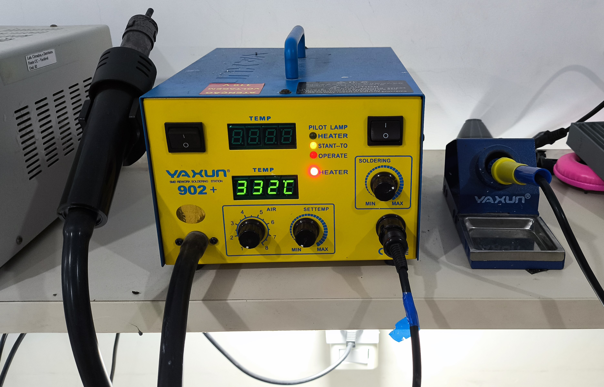
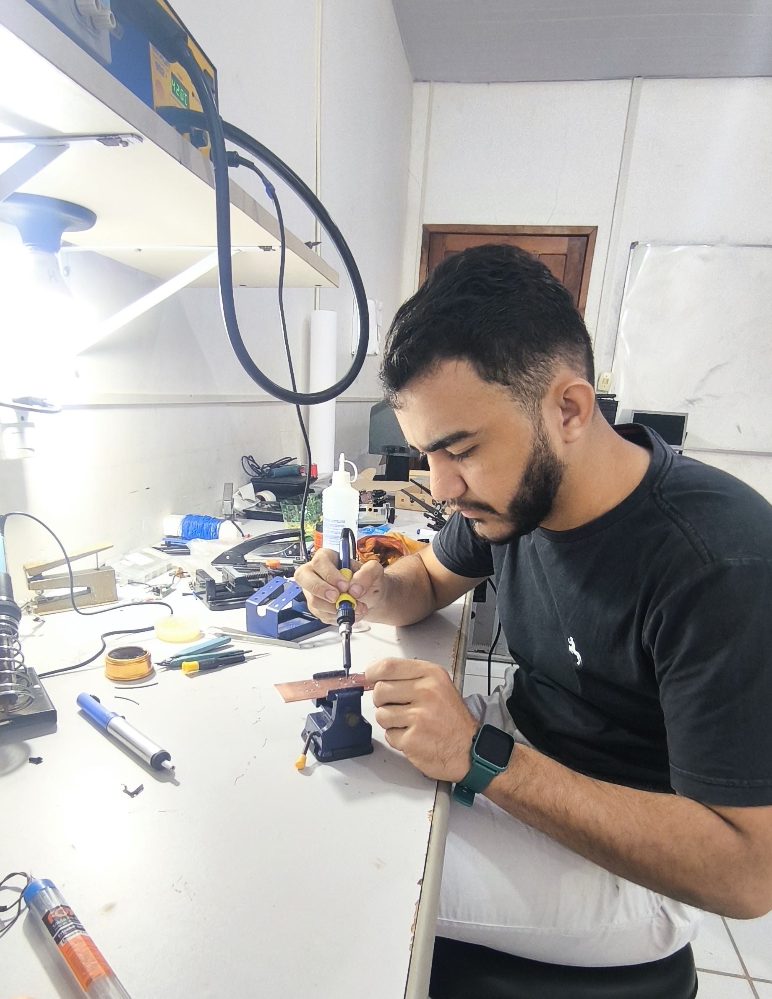

Chapter 5 SOLDA ELETRÔNICA
Como monitor da disciplina, eu ensinei os alunos a soldar componentes eletrônicos e fazer retrabalho. No laboratório, temos equipamentos de qualidade para isso, como ferros de solda, bancadas e uma estação de solda e retrabalho. Essa estação é super útil, com um ferro de solda que permite ajustar a temperatura com precisão através de um potenciômetro; e também contar com um soprador térmico com controle de temperatura e velocidade do ar.

A soldagem eletrônica une componentes como circuitos integrados, resistores, capacitores, diodos, conectores e outros dispositivos a placas de circuito impresso (PCBs) ou outros substratos. Esse processo cria conexões elétricas e mecânicas que fazem os circuitos funcionarem corretamente. A técnica utiliza um material de solda que é fundido sob calor e, em seguida, solidificado, formando uma junção sólida entre os componentes e os substratos.
Usamos componentes do tipo PTH (Pin Through Hole), que são soldados do outro lado da placa. Eles são mais fáceis de soldar, mas ocupam mais espaço. A solda é feita com estanho, um elemento químico muito usado na eletrônica. Quando o estanho entra em contato com o ferro de solda aquecido, ele derrete e depois endurece, fixando o componente na placa.
No final, pedi para os alunos removerem componentes de uma placa inutilizável e depois soldarem novamente, usando a estação de solda e retrabalho. Ensinei o manuseio correto e seguro das ferramentas, já que tanto o ferro de solda quanto o soprador térmico podem atingir altas temperaturas, suficientes para derreter o estanho, que funde a cerca de 230 °C. Alguns alunos também foram instruídos a fazer furos e soldar em circuitos impressos sem máscara, o que torna o processo um pouco mais complicado, já que a solda pode se espalhar mais facilmente.
